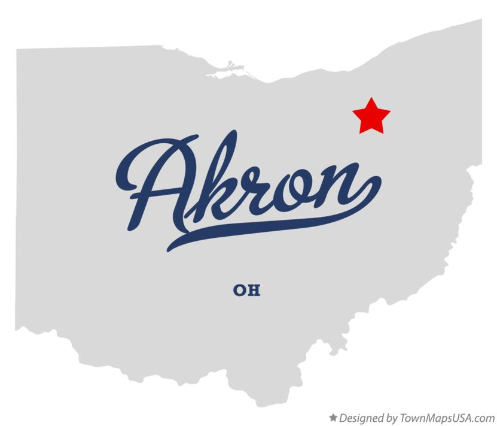

Akron, The Rubber Capital of the World
"A long history of rubber and tire manufacturing, carried on today by the Goodyear Tire and Rubber Company, gave Akron the nickname "Rubber Capital of the World". It was once known as a center of airship development. Today, its economy includes manufacturing, education, healthcare, and biomedical research; leading corporations include Gojo Industries, FirstEnergy, Huntington Bank, and Charter Spectrum. " - Wikipedia
Data
| Population | Classification | Region | Median Income | Year of Incorporation |
|---|---|---|---|---|
| 190,469 | Urban | Northeast Ohio | Ohio: 35,981 | Akron: 28,563 (79%) | 1865 |
- Stan Hywet Hall & Gardens
- Akron Zoo
- Akron Civic Theatre